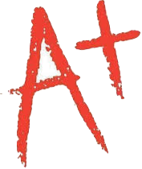

Kunal Sheth
Cornell University College Of Engineering Class of 2022
MAJOR: Operations Research
MINOR: Computer Science
Click here to see my resume (PDF)
Titan Analytics
Data Analyst
- Use AWS Lambda and AWS CLI to interact with AWS RDS cloud databases
- Run queries to parse through gameplay database, extracting necessary statistics
- Create statistical models to analyze football game data data using Python, NumPy, and SQL in order to help client teams game plan for optimal results
- Delivering play-by-play insights through scouting reports to select NCAA teams in order to help coaches make live decisions
 Cornell Data Science
Cornell Data Science
Data Engineer
- Performed Natural Language Processing on reviews of local Ithaca restaurants to analyze which restaurants have the best customer ratings and satisfaction
- Compared results to other local towns, grading Ithaca against its competitors over time, visualizing results with Pandas and NumPy dataframes
- Created a working real time data pipeline that visualized data on a live updating dashboard with all the necessary visualizations
 Robotics Club
Robotics Club
Engineering Lead
- Designed a robot able to lift objects and had arm and lever functions using SolidWorks
- Assembled the robot from scratch and did multiple rounds of testing to determine feasibility and reliability
- Placed 4th out of 37 teams in Southern NY at the VEX Robotics Competition
 Rube Goldberg Club
Rube Goldberg Club
Engineering Lead
- Designed and built a Rube Goldberg Machine that poured a bowl of cereal using household items such as cardboard, string, fans, electricity, dominos, and motors
- Headed a 12 person team responsible for ensuring the functionality of the machine and overseeing assembly of all aspects of the machine

MathnasiumInstructor
- Tutored and was responsible for 25 students ages 5-18 in high school math, including but not limited to algebra, geometry, trigonometry, and calculus
- Developed studying plans for 43 students, tailoring teaching styles to best fit each student’s needs and aptitudes
Long Island Soccer Referees Association
Grade 7 Referee
- Center Refereed 257 games for competitive soccer leagues (Long Island Junior Soccer League and Eastern New York Youth Soccer Association)
Programming Experience
HTML/CSS
4 Years
Python
3 Years
Java
2 Years
SQL/R/AMPL
1 Years
Programming
- Python
- NumPy/Pandas
- Basic ML
- Java
- HTML/CSS
- SQL
- R
- AMPL
Software
- Amazon Web Services
- RDS, Lambda
- SolidWorks
- MS Office
Languages
- English - Native
- Spanish - Advanced
- Gujarati - Intermediate
About Me
I am a rising sophomore at Cornell University in the College of Engineering, studying Operations Research with a minor in Computer Science. I am an aspiring data analytics enthusiast with a specific interest in computer science and systems optimization. In the Cornell community, I am heavily involved, having joined a startup called Titan Analytics, which helps football teams gain a deeper insight into their game film, offering unique advice that is only available through data analytics. I am also a part of the Cornell Data Science project team, where we use our growing knowledge of computer science and data analytics to create technological solutions for real world problems ranging from disaster relief to insightful restaurant reccomendations. Outside academics and extracurricular activities, I enjoy reading and learning about innovative technological advancements and playing and watching sports, namingly soccer.